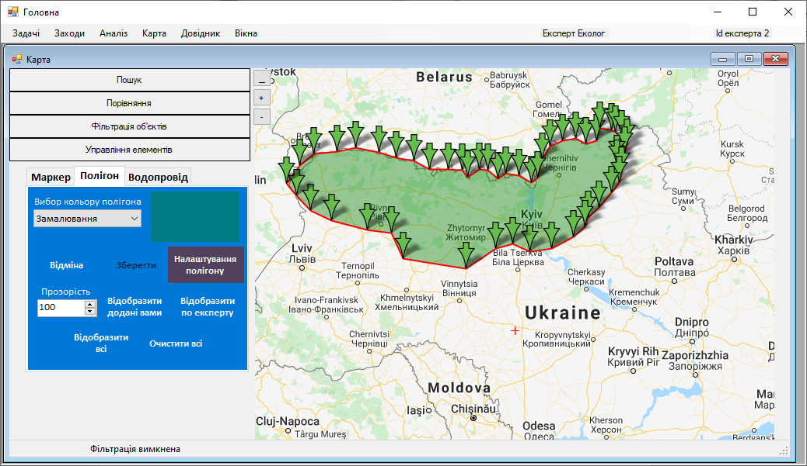

Крок 8. Налаштування полігону
Після того як полігон нанесено на карту, експерт натискає кнопку «Налаштування полігону».
Тоді з’явиться вікно «Налаштування об’єкту», де експерт обирає задачу. Для цього необхідно:
Потім у відкритому вікні «Налаштування об’єкту», експерт вводить назву полігону в поле «Назва» та натискає кнопку підтвердити.
Після чого експерт натискає кнопку «Підтвердити» та вікно успішно закривається.